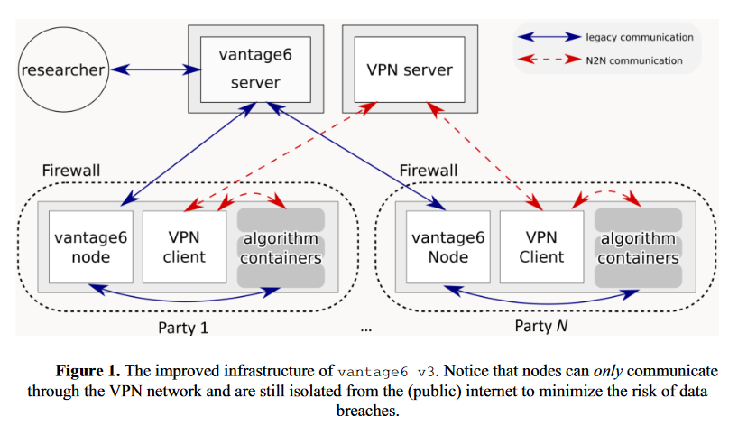

Railway IT & Security
A Personal Health Train implementation
The Medical Data Works Railway service implements a privacy preserving federated infrastructure as proposed
by the Personal Health Train. The main principle of the Personal Health Train is to bring questions to the data rather than moving data.
This concept is called Federated Learning.
In this section, the IT & security aspects of Railway are discussed.
Definitions
The Personal Health Train metaphor defines the following components:
- Station: An information system that contains sensitive data, such as from patients.
Typically a hospital or registry provides a Station. In vantage6, this corresponds to node hosted by an organization as part of a collaboration.
- Train: Software that encodes a question to be asked to a Station and outputs anonymous, statistical data.
Typically a university or a company provides a Train.
- Track: Software and infrastructure that allow Trains to enter Stations and ask questions.
Medical Data Works B.V. provides the Track.
Below is a video that explains the Personal Health Train.
Personal Health Train on Vimeo.
IT requirements
The IT requirements for a Station and a Train in Medical Data Works Railway are as follows:
Station
Hardware
The hardware requirements for a station depend on the size of the data and the local processing
required. As a rule of thumb, hardware requirements are similar to a single-center or local analysis as the overhead of the federated learning infrastructure is minimal.
Below we have listed some typical hardware requirements for different dinds of data processing, however these are dependent on the dataset and the analysis to be executed.
For tabular data of limited size and processing with classical machine learning or statistics,
typically the below is sufficient, as suggested by the vantage6 documentation.
- Memory: 4GB
- Storage: 50GB
- Processing: 1(v)CPU (x86_64 architecture preferred)
For imaging/free text data and processing with deep learning,
typically the below is sufficient:
- Memory: 32GB
- Storage: 1TB
- Processing: 1GPU & 1(v)CPU (x86_64 architecture preferred)
Software
As Vantage6 is based on executing Docker images, the software requirements are limited to the list below. Please mind that Ubuntu is the preferred operating system, as Docker runs natively on Linux.
Running Vantage6 on Windows requires Docker for Windows, which requires VT-x or AMD-v, as Docker for Windows creates a virtual machine
within the operating system. Hence, running Vantage6 on a virtual machine would be preferred with a Linux operating system.
- Operating System: Ubuntu 22.04+ (preferred), Windows 10 or higher, macOS 13.x or higher
- Docker
- Python version 3.10 or higher
Note that the programming language or sogyware inside the Docker container is not prescribed by our infrastructure,
rather it is a choice for who made the docker. Typcally we see Python and R being used, but as said this is not a requirement.
Network
All network activities are conducted as HTTP requests or websockets (which are initiated as a HTTP request). Hence, no opened ports or fixed IP addresses are needed at the station.
However, it is required to reach specific internet addresses as listed below.
The network requirements are:
- Stable and fast (1 Mbps+) internet connection
- Egress (outgoing) traffic to TCP port 443 for TLS should be enabled to:
- Medical Data Works project management server (fixed IP possible)
- Docker registry harbor2.vantage6.ai, where node docker image and basic algorithms are hosted
- Additional docker registry from which to fetch algorithm docker images (optional)
- Note that this means there is no need to open/expose any ports on the node side.
Train
All Trains are based on Docker. Depending on the implemented algorithm (Train), the requirements may vary.
Security
The Medical Data Works Railway service is a
version of the open source vantage6 software.
From version 3 of vantage6 (see
white paper), the following infrastructure is used:

Medical Data Works has setup a security framework for Railway projects adhering to the following practices:
- Every project (a combination of Stations & Trains) has its own environment.
- Users have user/role based access to the projects of which they are members.
- All central Medical Data Works components are hosted in a European region (Netherlands) of Microsoft Azure cloud.
- Tracks are TLS protected. We use an https endpoint for our vantage6 server.
This protects users form eavesdropping external attackers and Man-in-the-middle attacks.
- The project management server and the (optional) model aggregation node are separated.
- Stations do not need a public IP.
- Medical Data Works is in the process of certifying Railway with ISO 27001.
Additionally, we offer support for some security settings which vantage6 implements and we encourage projects to use them. With them, stations can further enhance their security by:
- For a given project, only a specific set of Train providers can be allowed to provide Trains.
Thereby, for example, only allowing certain universities and institutes
to pose questions to the data in a Station.
- Projects are encouraged to set strong policies for incoming Trains, whereby only a specific set of vetted Trains are allowed to enter stations.
Meaning that only allowed algorithms potentially subject to review will be able to interact with the data at the Station.
See vantage6 documentation for these policies.. This could prevent an organization from running malicious algorithms that haven't met their explicit approval.
- Two factor authentication is implemented (from vantage6 v3.5.0).
- Communications regarding computation results from Station to Station can be encrypted so as to decrease visibility into those communications from the server. The tracks themselves would have no visibility into the contents of the Trains (computation results).
See vantage6 documentation here.
- Only allowing Trains that come from a specific docker registry.
An organization might want to place trust in a single docker registry where, for example, only a specific set of users have upload access.